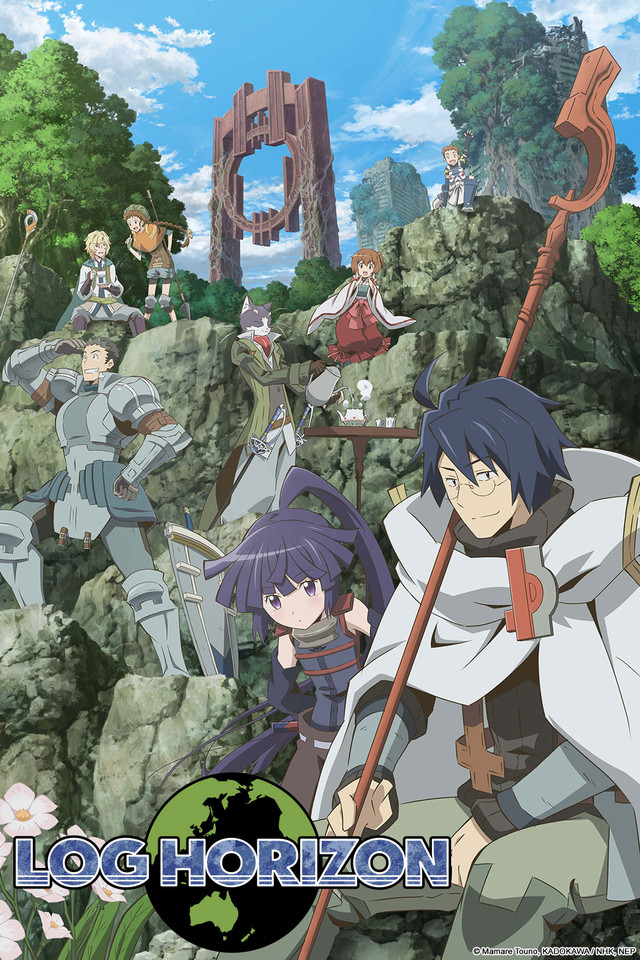
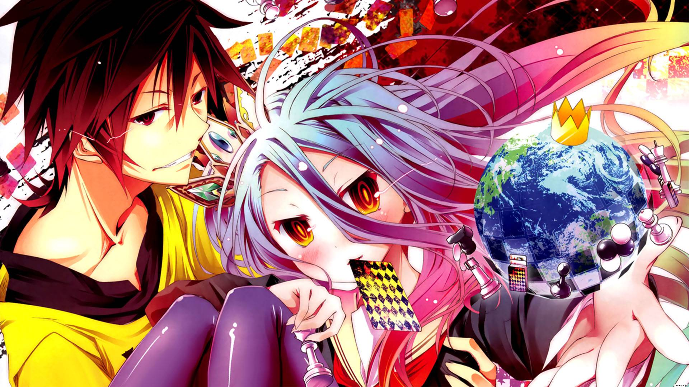

5: Darwin's Game

Ratings : 🌟 7.3
English Name : Darwin's Game
Genre :ActionGameSci-FiSuper PowerMysteryShounen
Seasons : 1
Episodes : 11
Air-Date : 4-January-2020
Watch-Time : 24 min.(Per Ep.)
Synopsis:
High school student Kaname Sudou receives an invitation from a classmate to play Darwin's Game, a mobile game he has never heard of. However, as soon as he opens the application, a green snake suddenly pops out from his phone screen and bites his neck, leaving him unconscious. Waking up in the infirmary without any signs of a snake bite, he is told by the school to take the rest of the day off. Although he is puzzled by what has happened, he dismisses the surreal experience as a hallucination and boards the train home.
Unfortunately, his curiosity gets the better of him and he uses the application once again. As the application appears to be just like any other battle game, Kaname breathes out a sigh of relief and decides to start his first match. However, the pleasant surprise is short-lived, as his in-game opponent unexpectedly appears right in front of him and attempts to hunt him down with a knife.
As he desperately runs for his life, Kaname puts two and two together and realizes that Darwin's Game is not an ordinary game, but rather, it's a brutal fight for survival.
4: Itai no wa Iya nano de Bougyoryoku ni Kyokufuri Shitai to Omoimasu

Ratings : 🌟 7.6
English Name : BOFURI: I Don't Want to Get Hurt, so I'll Max Out My Defense.
Genre : ActionAdventureComedyGameSci-FiFantasy
Seasons : 1
Episodes : 12
Air-Date : 8-January-2020
Watch-Time : 24 min.(Per Ep.)
Synopsis:
After an enthusiastic invitation from her friend, Kaede Honjou reluctantly agrees to try New World Online: a very popular VRMMO played by thousands of people across Japan. Naming her in-game character Maple, she sets out on her journey. As a complete novice to such games, she allocates all of her stat points into vitality, desiring to not get hurt. With not a single point in any other stat, Maple has extraordinarily high defense, but she can't move quickly or hit hard.
This doesn't end badly for her, however. Due to her high defense, Maple acquires overpowered skills such as Total Defense, Poison Immunity, and Devour. These skills, along with the incredibly powerful items she obtains, allow her to obliterate most enemies in a single hit. After only a few days of playing the game, Maple claims third place in a server-wide event, gaining a reputation as a player who is both unkillable and absurdly powerful.
Despite her overpowered character, Kaede has much to learn. As she progresses through the game, she meets new friends and acquaintances, helping her complete new levels and events. Through all of her adventures, she may even pick up some other crazy skills that exceed all expectations.
3: Sword Art Online

Ratings : 🌟 7.3
English Name : Sword Art Online
Genre : ActionAdventureGameRomanceFantasy
Seasons : 4
Episodes : 25(Per Season)
Air-Date : 8-July-2012
Watch-Time : 24 min.(Per Ep.)
Synopsis:
In the year 2022, virtual reality has progressed by leaps and bounds, and a massive online role-playing game called Sword Art Online (SAO) is launched. With the aid of "NerveGear" technology, players can control their avatars within the game using nothing but their own thoughts.
Kazuto Kirigaya, nicknamed "Kirito," is among the lucky few enthusiasts who get their hands on the first shipment of the game. He logs in to find himself, with ten-thousand others, in the scenic and elaborate world of Aincrad, one full of fantastic medieval weapons and gruesome monsters. However, in a cruel turn of events, the players soon realize they cannot log out; the game's creator has trapped them in his new world until they complete all one hundred levels of the game.
In order to escape Aincrad, Kirito will now have to interact and cooperate with his fellow players. Some are allies, while others are foes, like Asuna Yuuki, who commands the leading group attempting to escape from the ruthless game. To make matters worse, Sword Art Online is not all fun and games: if they die in Aincrad, they die in real life. Kirito must adapt to his new reality, fight for his survival, and hopefully break free from his virtual hell.
2: Log Horizon
Ratings : 🌟 8.0
English Name : Log Horizon
Genre : ActionAdventureGameMagicFantasy
Seasons : 3
Episodes : 25(Per Season)
Air-Date : 5-October-2013
Watch-Time : 24 min.(Per Ep.)
Synopsis:
In the blink of an eye, thirty thousand bewildered Japanese gamers are whisked from their everyday lives into the world of the popular MMORPG, Elder Tale, after the game's latest update—unable to log out. Among them is the socially awkward college student Shiroe, whose confusion and shock lasts only a moment as, a veteran of the game, he immediately sets out to explore the limits of his new reality.
Shiroe must learn to live in this new world, leading others and negotiating with the NPC "natives" in order to bring stability to the virtual city of Akihabara. He is joined by his unfortunate friend Naotsugu, having logged in for the first time in years only to find himself trapped, and Akatsuki, a petite but fierce assassin who labels Shiroe as her master. A tale of fantasy, adventure, and politics, Log Horizon explores the elements of gaming through the eyes of a master strategist who attempts to make the best of a puzzling situation.
1: No Game No Life
Ratings : 🌟 8.2
English Name : No Game, No Life
Genre : GameAdventureComedySuper NaturalEcchiFantasy
Seasons : 1
Episodes : 12
Air-Date : 9-April-2014
Watch-Time : 24 min.(Per Ep.)
Synopsis:
No Game No Life is a surreal comedy that follows Sora and Shiro, shut-in NEET siblings and the online gamer duo behind the legendary username "Blank." They view the real world as just another lousy game; however, a strange e-mail challenging them to a chess match changes everything—the brother and sister are plunged into an otherworldly realm where they meet Tet, the God of Games.
The mysterious god welcomes Sora and Shiro to Disboard, a world where all forms of conflict—from petty squabbles to the fate of whole countries—are settled not through war, but by way of high-stake games. This system works thanks to a fundamental rule wherein each party must wager something they deem to be of equal value to the other party's wager. In this strange land where the very idea of humanity is reduced to child's play, the indifferent genius gamer duo of Sora and Shiro have finally found a real reason to keep playing games: to unite the sixteen races of Disboard, defeat Tet, and become the gods of this new, gaming-is-everything world.